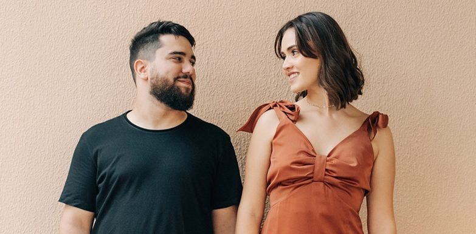
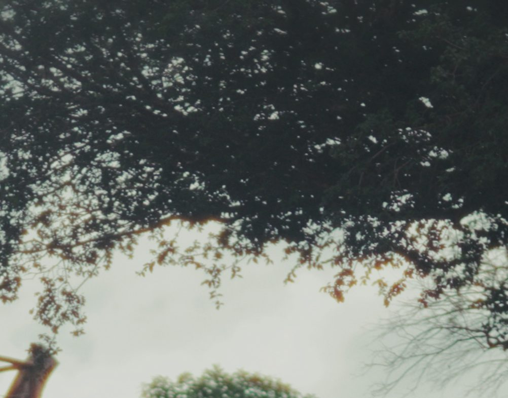

Cada casamento é uma história digna de estar no cinema.
Por trás
das
câmeras

“Antes de qualquer câmera ligada, existe escuta.”
Oie! Tudo bem? Aqui é a Gabi e o João, e estamos prontos para registrar tudo sobre o melhor dia da sua vida!
A Bonis Films nasceu em 2024 com desejo de contar histórias reais, do jeito que elas acontecem. Registramos os momentos sem encenações, sem pressa, tudo de maneira que deve ser: com naturalidade e um toque de cinema para seu grande dia.
Somos um casal católico, e acreditamos profundamente no valor do casamento com respeito, sensibilidade e intenção, entendendo que ali não acontece apenas um evento, mas um encontro de fé, amor e propósito.
Nosso trabalho começa muito antes do casamento e continua muito depois dele. Porque não registramos apenas um evento, mas aquilo que foi vivido.

Assista aos nossos filmes
Narrativa, edição e cor de cinema. Os filmes completos dos casamentos que contamos estão no nosso canal.
Portfólio
Alguns frames das histórias que já contamos. Os filmes completos estão no nosso YouTube.



Nosso propósito é transformar momentos em narrativa, emoções em memórias e o casamento em um filme que faça sentido hoje, daqui a dez ou trinta anos.
Serviços
Casamentos
Cobertura do making of até a festa, com três filmmakers, wedding film com cor de cinema, teaser para o Reels e captação com drone.
Pré-wedding e ensaios
Um capítulo antes do grande dia, com filme próprio, e o ensaio especial da prova do vestido.
Civil e extras
Casamento civil, cerimônia completa na íntegra e Same Day Edit, o vídeo entregue no fim da própria festa.
Quer ver os pacotes, valores e montar o seu?
Ver pacotes e orçamento
Estou passando para agradecer de todoooo meu coração por tudo que vocês fizeram por mim e pelo Felipe. Vocês são incríveis, muito obrigada por cada detalhe, cada clique, vocês são demais!! 💗
Ansiosa para os filmes 💕
Vamos contar
a história
de vocês?
Agenda 2026 aberta. Conte para a gente a data e o local, e respondemos com todos os detalhes.